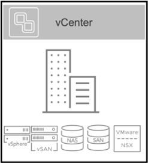
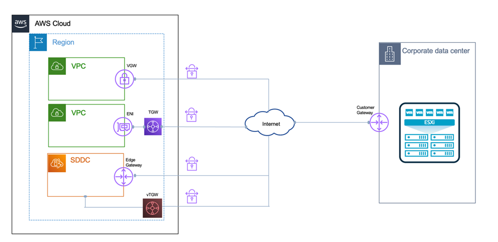
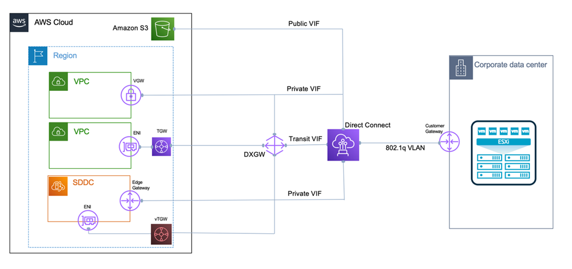
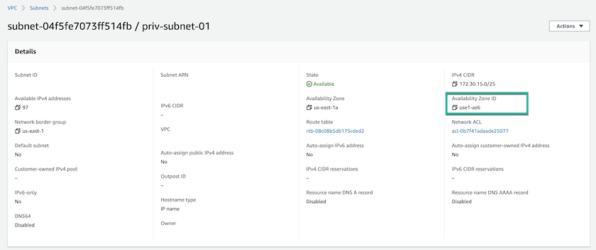
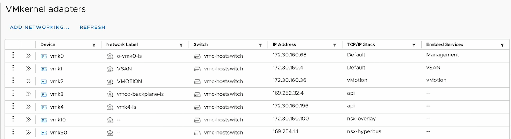
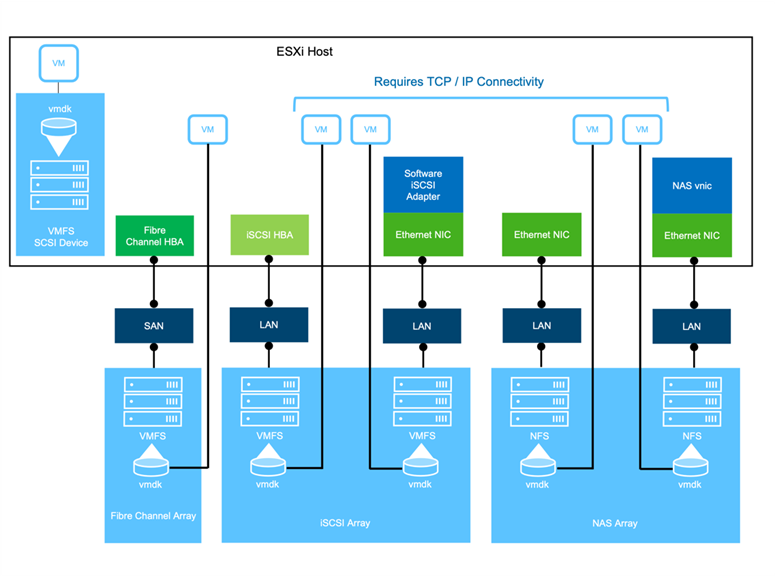
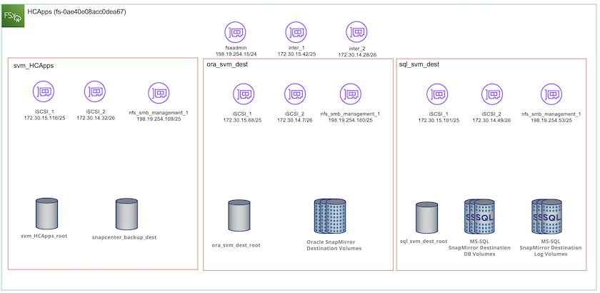
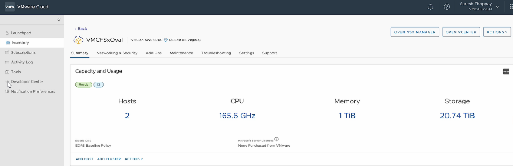

인공 지능
인공 지능
DR 솔루션 요구 사항, 사전 요청 및 계획
 변경 제안
변경 제안
제공합니다
이 솔루션에는 NetApp, VMware, AWS(Amazon Web Services), Veeam의 혁신적인 기술이 포함되어 있습니다.
VMware
VMware 클라우드 기반
VMware Cloud Foundation 플랫폼은 관리자가 이기종 환경에서 논리적 인프라를 프로비저닝할 수 있도록 여러 제품 오퍼링을 통합합니다. 이러한 인프라(도메인)는 프라이빗 클라우드와 퍼블릭 클라우드 전반에서 일관된 운영을 제공합니다. Cloud Foundation 소프트웨어와 함께 제공되는 BOM은 사전 검증된 구성 요소와 검증된 구성 요소를 식별하여 고객의 위험을 줄이고 구축을 용이하게 합니다.
Cloud Foundation BOM의 구성 요소는 다음과 같습니다.
-
클라우드 빌더
-
SDDC 관리자
-
VMware vCenter Server 어플라이언스
-
VMware ESXi
-
VMware NSX
-
자동화 표준화
-
Suite Lifecycle Manager vRealize
-
로그 통찰력 vRealize
VMware Cloud Foundation에 대한 자세한 내용은 을 참조하십시오 "VMware Cloud Foundation 설명서".
VMware vSphere를 참조하십시오
VMware vSphere는 물리적 리소스를 고객의 워크로드 및 애플리케이션 요구 사항을 충족하는 데 사용할 수 있는 컴퓨팅, 네트워크 및 스토리지 풀로 전환하는 가상화 플랫폼입니다. VMware vSphere의 주요 구성 요소는 다음과 같습니다.
-
* ESXi. * 이 VMware 하이퍼바이저는 컴퓨팅 프로세서, 메모리, 네트워크 및 기타 리소스를 추상화하여 가상 머신 및 컨테이너 워크로드에 사용할 수 있도록 합니다.
-
* vCenter. * VMware vCenter는 가상 인프라의 일부로 컴퓨팅 리소스, 네트워킹 및 스토리지와 상호 작용할 수 있는 중앙 관리 환경을 제공합니다.
고객은 NetApp ONTAP와 함께 강력한 제품 통합, 강력한 지원, 강력한 기능 및 스토리지 효율성을 제공하여 강력한 하이브리드 멀티 클라우드를 구축함으로써 vSphere 환경의 잠재력을 완벽하게 실현할 수 있습니다.
VMware vSphere에 대한 자세한 내용은 을 참조하십시오 "이 링크".
VMware와 함께 제공되는 NetApp 솔루션에 대한 자세한 내용은 다음 웹 사이트를 참조하십시오 "이 링크".
VMware NSX
일반적으로 네트워크 하이퍼바이저라고 하는 VMware NSX는 소프트웨어 정의 모델을 사용하여 가상화된 워크로드를 연결합니다. VMware NSX는 온프레미스 및 AWS 기반의 VMware Cloud에서 어디에나 존재하며, 이 곳에서 고객 애플리케이션 및 워크로드를 위한 네트워크 가상화 및 보안을 강화합니다.
VMware NSX에 대한 자세한 내용은 를 참조하십시오 "이 링크".
넷엡
NetApp ONTAP를 참조하십시오
NetApp ONTAP 소프트웨어는 약 20년 동안 VMware vSphere 환경을 위한 최고의 스토리지 솔루션으로, 혁신적인 기능을 지속적으로 추가하여 관리를 단순화하는 동시에 비용을 절감했습니다. ONTAP와 vSphere를 함께 사용하면 호스트 하드웨어 및 VMware 소프트웨어 비용을 절감할 수 있습니다. 또한 기본 스토리지 효율성을 활용하면서도 일관된 고성능을 통해 저렴한 비용으로 데이터를 보호할 수 있습니다.
NetApp ONTAP에 대한 자세한 내용은 다음 웹 사이트를 참조하십시오 "이 링크".
VMware용 NetApp ONTAP 툴
VMware용 ONTAP 툴은 여러 플러그인을 NetApp 스토리지 시스템을 사용하는 VMware 환경에서 가상 머신의 라이프사이클을 완벽하게 관리하는 단일 가상 어플라이언스에 결합했습니다. VMware용 ONTAP 툴은 다음과 같습니다.
-
* VSC(가상 스토리지 콘솔) * 는 NetApp 스토리지를 사용하여 VM 및 데이터 저장소에 대한 포괄적인 관리 작업을 수행합니다.
-
* ONTAP용 VASA Provider. * VMware 가상 볼륨(VVol) 및 NetApp 스토리지를 통해 SPBM(스토리지 정책 기반 관리)을 지원합니다.
-
* SRA(Storage Replication Adapter) *. VMware SRM(Site Recovery Manager)과 함께 사용할 경우 장애가 발생할 경우 vCenter 데이터 저장소와 가상 머신을 복구합니다.
VMware용 ONTAP 툴을 사용하면 외부 스토리지를 관리할 뿐만 아니라 VVOL 및 VMware 사이트 복구 관리자도 통합할 수 있습니다. 따라서 vCenter 환경에서 NetApp 스토리지를 훨씬 쉽게 구축하고 운영할 수 있습니다.
VMware용 NetApp ONTAP 툴에 대한 자세한 내용은 다음 사이트를 참조하십시오 "이 링크".
NetApp SnapCenter를 참조하십시오
NetApp SnapCenter 소프트웨어는 애플리케이션, 데이터베이스 및 파일 시스템 전반에서 데이터 보호를 안전하게 조율하고 관리하는 사용하기 쉬운 엔터프라이즈 플랫폼입니다. SnapCenter는 스토리지 시스템의 활동 감독 및 규제 범주에는 영향을 받지 않으면서 이러한 작업을 애플리케이션 소유자에게 오프로드하여 백업, 복원 및 클론 라이프사이클 관리를 단순화합니다. SnapCenter는 스토리지 기반 데이터 관리를 활용하여 성능 및 가용성을 높이는 동시에 테스트 및 개발 시간을 단축합니다.
VMware vSphere용 SnapCenter 플러그인은 VM(가상 머신), 데이터 저장소 및 VMDK(가상 머신 디스크)에 대해 충돌 시에도 정합성이 보장되고 VM 정합성이 보장되는 백업 및 복원 작업을 지원합니다. 또한 SnapCenter 애플리케이션별 플러그인을 지원하여 가상화된 데이터베이스 및 파일 시스템에 대한 애플리케이션 정합성이 보장되는 백업 및 복구 작업을 보호합니다.
NetApp SnapCenter에 대한 자세한 내용은 다음 웹 사이트를 참조하십시오 "이 링크".
타사 데이터 보호
Veeam 백업 및 AMP, 복제
Veeam Backup & Replication은 클라우드, 가상 및 물리적 워크로드를 위한 백업, 복구 및 데이터 관리 솔루션입니다. Veeam Backup & Replication은 NetApp Snapshot 기술과의 전문적인 통합으로 vSphere 환경을 더욱 보호합니다.
Veeam Backup & Replication에 대한 자세한 내용은 을 참조하십시오 "이 링크".
퍼블릭 클라우드
AWS ID 및 액세스 관리
AWS 환경에는 컴퓨팅, 스토리지, 데이터베이스, 네트워크, 분석, 데이터 관리 등 및 기타 다양한 기능을 통해 비즈니스 과제를 해결할 수 있습니다. 기업은 이러한 제품, 서비스 및 리소스에 액세스할 수 있는 권한이 있는 사용자를 정의할 수 있어야 합니다. 사용자가 설정을 조작, 변경 또는 추가할 수 있는 조건을 결정하는 것도 마찬가지로 중요합니다.
AWS AIM(Identity and Access Management)은 AWS 서비스 및 제품에 대한 액세스를 관리할 수 있는 안전한 제어 환경을 제공합니다. 적절하게 구성된 사용자, 액세스 키 및 사용 권한을 통해 AWS 및 Amazon FSx에서 VMware Cloud를 구축할 수 있습니다.
AIM에 대한 자세한 내용은 을 참조하십시오 "이 링크".
AWS 기반 VMware 클라우드
VMware Cloud on AWS는 기본 AWS 서비스에 최적화된 액세스를 통해 VMware의 엔터프라이즈급 SDDC 소프트웨어를 AWS 클라우드에 제공합니다. VMware Cloud Foundation을 기반으로 하는 VMware Cloud on AWS는 VMware의 컴퓨팅, 스토리지 및 네트워크 가상화 제품(VMware vSphere, VMware vSAN 및 VMware NSX)과 유연하고 탄력적인 전용 AWS 인프라에서 실행되도록 최적화된 VMware vCenter Server 관리를 통합합니다.
AWS 기반 VMware Cloud에 대한 자세한 내용은 를 참조하십시오 "이 링크".
NetApp ONTAP용 Amazon FSx
NetApp ONTAP용 Amazon FSx는 모든 기능을 갖추고 있으며 완벽하게 관리되는 ONTAP 시스템으로, 기본 AWS 서비스로 제공됩니다. NetApp ONTAP을 기반으로 구축된 이 제품은 친숙한 기능을 제공하는 동시에 완전 관리형 클라우드 서비스의 단순성을 제공합니다.
ONTAP용 Amazon FSx는 퍼블릭 클라우드 또는 온프레미스의 VMware를 비롯한 다양한 컴퓨팅 유형에 대한 멀티 프로토콜 지원을 제공합니다. 현재 게스트 연결 사용 사례 및 기술 미리 보기의 NFS 데이터 저장소에 사용할 수 있는 Amazon FSx for ONTAP를 사용하면 기업은 사내 환경과 클라우드에서 익숙한 기능을 활용할 수 있습니다.
NetApp ONTAP용 Amazon FSx에 대한 자세한 내용은 를 참조하십시오 "이 링크".
개요 - AWS 게스트 연결 스토리지 재해 복구
이 섹션에서는 사용자가 NetApp 및 VMware와 함께 사용할 온프레미스 및 클라우드 환경을 확인, 구성 및 검증하도록 지원하는 지침을 제공합니다. 특히, 이 솔루션은 ONTAP AFF 온-프레미스 및 VMware 클라우드 및 클라우드용 AWS FSx ONTAP와 함께 VMware 게스트 연결 사용 사례에 중점을 둡니다. 이 솔루션은 재해 복구 시나리오에서 Oracle과 MS SQL의 두 가지 애플리케이션으로 입증되었습니다.
기술 및 지식
Cloud Volumes Service for AWS에 액세스하려면 다음 기술 및 정보가 필요합니다.
-
VMware 및 ONTAP 사내 환경에 대한 액세스 및 지식
-
VMware Cloud 및 AWS에 대한 지식 및 액세스
-
AWS 및 Amazon FSx ONTAP에 대한 액세스 및 지식
-
SDDC 및 AWS 리소스에 대한 지식
-
온프레미스 리소스와 클라우드 리소스 간의 네트워크 연결에 대한 지식
-
재해 복구 시나리오에 대한 작업 지식
-
VMware에 구축된 애플리케이션에 대한 작업 지식
관리
온프레미스 또는 클라우드에서 리소스와 상호 작용하든, 사용자와 관리자는 자신의 권한에 따라 필요할 때 필요한 리소스를 프로비저닝할 수 있는 기능과 권한을 가지고 있어야 합니다. 성공적인 하이브리드 클라우드 구축을 위해서는 ONTAP, VMware를 비롯한 온프레미스 시스템과 VMware 클라우드 및 AWS를 포함한 클라우드 리소스에 대한 역할 및 사용 권한의 상호 작용이 무엇보다 중요합니다.
VMware 및 ONTAP On-Premises와 VMware Cloud on AWS 및 FSx ONTAP를 사용하여 DR 솔루션을 구성하려면 다음 관리 작업이 필요합니다.
-
다음을 프로비저닝할 수 있는 역할 및 계정:
-
ONTAP 스토리지 리소스
-
VMware VM, 데이터 저장소 등
-
AWS VPC 및 보안 그룹
-
-
사내 VMware 환경 및 ONTAP 프로비저닝
-
VMware 클라우드 환경
-
ONTAP 파일 시스템용 FSx에 대한 Amazon
-
사내 환경과 AWS 간의 연결
-
AWS VPC 연결
온프레미스
VMware 가상 환경에는 다음 그림과 같이 ESXi 호스트, VMware vCenter Server, NSX 네트워킹 및 기타 구성 요소의 라이센스가 포함됩니다. 모든 구성 요소는 서로 다른 방식으로 라이센스가 부여되므로 기본 구성 요소가 사용 가능한 라이센스 용량을 어떻게 소비하는지 이해하는 것이 중요합니다.

ESXi 호스트
VMware 환경의 컴퓨팅 호스트는 ESXi와 함께 구축됩니다. 다양한 용량 계층에서 vSphere로 라이센스를 부여하면 가상 머신은 각 호스트의 물리적 CPU와 해당 기능을 활용할 수 있습니다.
VMware vCenter를 참조하십시오
ESXi 호스트 및 스토리지 관리는 vCenter Server를 사용하는 VMware 관리자가 사용할 수 있는 다양한 기능 중 하나입니다. VMware vCenter 7.0부터 VMware vCenter의 세 가지 에디션을 사용할 수 있습니다.
-
vCenter Server Essentials 를 참조하십시오
-
vCenter Server Foundation을 참조하십시오
-
vCenter Server Standard를 참조하십시오
VMware NSX
VMware NSX는 관리자에게 고급 기능을 활성화하는 데 필요한 유연성을 제공합니다. 기능은 라이센스가 부여된 NSX-T Edition 버전에 따라 활성화됩니다.
-
전문가입니다
-
고급
-
엔터프라이즈급 플러스
-
원격 사무소/지사
NetApp ONTAP를 참조하십시오
NetApp ONTAP 라이센싱은 관리자가 NetApp 스토리지 내의 다양한 기능에 액세스하는 방법을 나타냅니다. 라이센스는 하나 이상의 소프트웨어 사용 권한의 기록입니다. 라이센스 코드라고도 하는 라이센스 키를 설치하면 스토리지 시스템에서 특정 기능 또는 서비스를 사용할 수 있습니다. 예를 들어, ONTAP는 모든 주요 업계 표준 클라이언트 프로토콜(NFS, SMB, FC, FCoE, iSCSI, NVMe/FC) 라이센스를 통해 제공됩니다.
Data ONTAP 기능 라이센스는 여러 기능 또는 단일 기능을 포함하는 패키지로 발급됩니다. 패키지에는 라이센스 키가 필요하며, 키를 설치하면 패키지의 모든 기능에 액세스할 수 있습니다.
라이센스 유형은 다음과 같습니다.
-
* 노드 잠김 라이센스. * 노드 잠김 라이센스를 설치하면 노드에 라이센스가 부여된 기능이 부여됩니다. 클러스터에 라이센스가 부여된 기능을 사용하려면 해당 기능에 대해 하나 이상의 노드에 라이센스가 있어야 합니다.
-
* 마스터/사이트 라이센스. * 마스터 또는 사이트 라이센스는 특정 시스템 일련 번호에 연결되지 않습니다. 사이트 라이센스를 설치하면 클러스터의 모든 노드에 라이센스가 부여된 기능이 부여됩니다.
-
* 데모/임시 사용권. * 데모 또는 임시 사용권은 일정 시간이 지나면 만료됩니다. 이 라이센스를 사용하면 사용 권한을 구입하지 않고도 특정 소프트웨어 기능을 사용할 수 있습니다.
-
* 용량 라이센스(ONTAP Select 및 FabricPool에만 해당). * ONTAP Select 인스턴스는 사용자가 관리하려는 데이터 양에 따라 라이센스가 부여됩니다. ONTAP 9.4부터 FabricPool를 사용하려면 타사 스토리지 계층(예: AWS)과 함께 용량 라이센스를 사용해야 합니다.
NetApp SnapCenter를 참조하십시오
SnapCenter에서는 데이터 보호 작업을 위해 여러 개의 라이센스가 필요합니다. 설치하는 SnapCenter 라이센스 유형은 스토리지 환경과 사용하려는 기능에 따라 다릅니다. SnapCenter Standard 라이센스는 애플리케이션, 데이터베이스, 파일 시스템 및 가상 머신을 보호합니다. SnapCenter에 스토리지 시스템을 추가하기 전에 하나 이상의 SnapCenter 라이센스를 설치해야 합니다.
애플리케이션, 데이터베이스, 파일 시스템 및 가상 머신을 보호하려면 FAS 또는 AFF 스토리지 시스템에 표준 컨트롤러 기반 라이센스가 설치되어 있거나 ONTAP Select 및 Cloud Volumes ONTAP 플랫폼에 표준 용량 기반 라이센스가 설치되어 있어야 합니다.
이 솔루션에 대한 다음 SnapCenter 백업 사전 요구 사항을 참조하십시오.
-
백업된 데이터베이스 및 구성 파일을 찾기 위해 사내 ONTAP 시스템에서 생성된 볼륨 및 SMB 공유입니다.
-
사내 ONTAP 시스템과 AWS 계정의 FSx 또는 CVO 간 SnapMirror 관계 백업된 SnapCenter 데이터베이스 및 구성 파일이 포함된 스냅샷을 전송하는 데 사용됩니다.
-
EC2 인스턴스 또는 VMware Cloud SDDC의 VM에 클라우드 계정에 설치된 Windows Server
-
VMware 클라우드의 Windows EC2 인스턴스 또는 VM에 설치된 SnapCenter
MS SQL
이 솔루션 검증의 일부로 MS SQL을 사용하여 재해 복구를 시연합니다.
MS SQL 및 NetApp ONTAP의 모범 사례에 대한 자세한 내용은 다음 웹 사이트를 참조하십시오 "이 링크".
오라클
이 솔루션 검증의 일환으로, NetApp은 Oracle을 사용하여 재해 복구를 시연합니다. Oracle 및 NetApp ONTAP 모범 사례에 대한 자세한 내용은 다음 웹 사이트를 참조하십시오 "이 링크".
Veeam을 선택합니다
이 솔루션 검증의 일부로 Veeam을 사용하여 재해 복구를 시연합니다. Veeam 및 NetApp ONTAP의 모범 사례에 대한 자세한 내용은 를 참조하십시오 "이 링크".
클라우드
설치하고
다음 작업을 수행할 수 있어야 합니다.
-
도메인 서비스 배포 및 구성
-
특정 VPC에 애플리케이션 요구 사항당 FSx ONTAP를 구축합니다.
-
FSx ONTAP의 트래픽을 허용하도록 AWS 컴퓨팅 게이트웨이에서 VMware 클라우드를 구성합니다.
-
AWS 서브넷의 VMware Cloud와 FSx ONTAP 서비스가 구축된 AWS VPC 서브넷 간의 통신을 허용하도록 AWS 보안 그룹을 구성합니다.
VMware 클라우드
다음 작업을 수행할 수 있어야 합니다.
-
AWS SDDC에서 VMware Cloud를 구성합니다.
Cloud Manager 계정 검증
NetApp Cloud Manager로 리소스를 구축할 수 있어야 합니다. 다음 작업을 완료할 수 있는지 확인합니다.
NetApp ONTAP용 Amazon FSx
AWS 계정이 있는 후에는 다음 작업을 수행할 수 있어야 합니다.
-
NetApp ONTAP 파일 시스템에 Amazon FSx를 프로비저닝할 수 있는 IAM 관리 사용자를 생성합니다.
구성 사전 요구 사항
고객이 사용하는 다양한 토폴로지를 고려할 때 이 섹션에서는 사내에서 클라우드 리소스로의 통신을 지원하는 데 필요한 포트를 중점적으로 다룹니다.
필수 포트 및 방화벽 고려 사항
다음 표에는 인프라 전체에서 사용해야 하는 포트가 설명되어 있습니다.
Veeam Backup & Replication 소프트웨어에 필요한 포트의 전체 목록을 보려면 다음 단계를 따르십시오 "이 링크".
SnapCenter의 포트 요구 사항에 대한 보다 포괄적인 목록은 을 참조하십시오 "이 링크".
다음 표에는 Microsoft Windows Server에 대한 Veeam 포트 요구사항이 나와 있습니다.
| 보낸 사람 | 를 선택합니다 | 프로토콜 | 포트 | 참고 |
|---|---|---|---|---|
백업 서버 |
Microsoft Windows 서버 |
TCP |
445 |
Veeam Backup & Replication 구성 요소를 구축하는 데 필요한 포트입니다. |
백업 프록시 |
TCP |
6160 |
Veeam Installer Service에서 사용되는 기본 포트입니다. |
|
백업 저장소 |
TCP |
2500에서 3500까지 |
데이터 전송 채널 및 로그 파일 수집에 사용되는 기본 포트 범위 |
|
서버를 마운트합니다 |
TCP |
6162 |
Veeam Data Mover에서 사용되는 기본 포트입니다. |

|
작업에서 사용하는 모든 TCP 연결에 대해 이 범위의 포트 하나가 할당됩니다. |
다음 표에는 Linux Server의 Veeam 포트 요구사항이 나와 있습니다.
| 보낸 사람 | 를 선택합니다 | 프로토콜 | 포트 | 참고 |
|---|---|---|---|---|
백업 서버 |
Linux 서버 |
TCP |
22 |
콘솔에서 대상 Linux 호스트로 제어 채널로 사용되는 포트입니다. |
TCP |
6162 |
Veeam Data Mover에서 사용되는 기본 포트입니다. |
||
TCP |
2500에서 3500까지 |
데이터 전송 채널 및 로그 파일 수집에 사용되는 기본 포트 범위 |
|
|
작업에서 사용하는 모든 TCP 연결에 대해 이 범위의 포트 하나가 할당됩니다. |
다음 표에는 Veeam Backup Server 포트 요구사항이 나와 있습니다.
| 보낸 사람 | 를 선택합니다 | 프로토콜 | 포트 | 참고 |
|---|---|---|---|---|
백업 서버 |
vCenter Server를 선택합니다 |
HTTPS, TCP |
443 |
vCenter Server에 연결하는 데 사용되는 기본 포트입니다. 콘솔에서 대상 Linux 호스트로 제어 채널로 사용되는 포트입니다. |
Veeam Backup & Replication 구성 데이터베이스를 호스팅하는 Microsoft SQL Server |
TCP |
1443 |
Veeam Backup & Replication 구성 데이터베이스가 구축된 Microsoft SQL Server와의 통신에 사용되는 포트입니다(Microsoft SQL Server 기본 인스턴스를 사용하는 경우). |
|
모든 백업 서버의 이름 확인이 있는 DNS 서버 |
TCP |
3389 |
DNS 서버와 통신하는 데 사용되는 포트입니다 |
|
|
vCloud Director를 사용하는 경우 기본 vCenter Server에서 포트 443을 열어야 합니다. |
다음 표에는 Veeam Backup Proxy 포트 요구 사항이 나와 있습니다.
| 보낸 사람 | 를 선택합니다 | 프로토콜 | 포트 | 참고 |
|---|---|---|---|---|
백업 서버 |
백업 프록시 |
TCP |
6210 |
SMB 파일 공유 백업 중에 VSS 스냅샷을 생성하기 위해 Veeam Backup VSS Integration Service에서 사용하는 기본 포트입니다. |
백업 프록시 |
vCenter Server를 선택합니다 |
TCP |
1443 |
vCenter 설정에서 사용자 지정할 수 있는 기본 VMware 웹 서비스 포트입니다. |
다음 표에는 SnapCenter 포트 요구 사항이 나와 있습니다.
| 포트 유형 | 프로토콜 | 포트 | 참고 |
|---|---|---|---|
SnapCenter 관리 포트 |
HTTPS |
8146 |
이 포트는 SnapCenter 클라이언트(SnapCenter 사용자)와 SnapCenter 서버 간의 통신에 사용됩니다. 플러그인 호스트에서 SnapCenter 서버로의 통신에도 사용됩니다. |
SnapCenter SMCore 통신 포트입니다 |
HTTPS |
8043 |
이 포트는 SnapCenter 서버와 SnapCenter 플러그인이 설치된 호스트 간의 통신에 사용됩니다. |
Windows 플러그인 호스트, 설치 |
TCP |
135, 445 |
이러한 포트는 SnapCenter 서버와 플러그인이 설치되는 호스트 간의 통신에 사용됩니다. 설치 후 포트를 닫을 수 있습니다. 또한 Windows Instrumentation Services는 열려 있어야 하는 49152 ~ 65535 포트를 검색합니다. |
Linux 플러그인 호스트, 설치 |
SSH를 클릭합니다 |
22 |
이러한 포트는 SnapCenter 서버와 플러그인이 설치되는 호스트 간의 통신에 사용됩니다. 이 포트는 SnapCenter에서 플러그인 패키지 바이너리를 Linux 플러그인 호스트에 복사하는 데 사용됩니다. |
Windows/Linux용 SnapCenter 플러그인 패키지 |
HTTPS |
8145 |
이 포트는 SnapCenter 플러그인이 설치된 SMCore와 호스트 간의 통신에 사용됩니다. |
VMware vSphere vCenter Server 포트입니다 |
HTTPS |
443 |
이 포트는 VMware vSphere용 SnapCenter 플러그인과 vCenter Server 간의 통신에 사용됩니다. |
VMware vSphere 포트용 SnapCenter 플러그인 |
HTTPS |
8144 |
이 포트는 vCenter vSphere 웹 클라이언트 및 SnapCenter 서버로부터 통신하는 데 사용됩니다. |
네트워킹
이 솔루션을 사용하려면 NetApp SyncMirror 작업을 수행하기 위해 사내 ONTAP 클러스터에서 NetApp ONTAP 인터커넥트 클러스터 네트워크 주소용 AWS FSx와 성공적으로 통신해야 합니다. 또한 Veeam 백업 서버가 AWS S3 버킷에 액세스할 수 있어야 합니다. 인터넷 전송을 사용하는 대신 기존 VPN 또는 Direct Connect 링크를 S3 버킷에 대한 전용 링크로 사용할 수 있습니다.
온프레미스
ONTAP는 SAN 환경을 위한 iSCSI, FC(파이버 채널), FCoE(Fibre Channel over Ethernet) 또는 NVMe/FC(Non-Volatile Memory Express over Fibre Channel)를 비롯하여 가상화에 사용되는 모든 주요 스토리지 프로토콜을 지원합니다. ONTAP는 게스트 연결을 위해 NFS(v3 및 v4.1) 및 SMB 또는 S3를 지원합니다. 환경에 가장 적합한 프로토콜을 자유롭게 선택할 수 있으며, 필요에 따라 단일 시스템에서 프로토콜을 결합할 수 있습니다. 예를 들어, 몇 개의 iSCSI LUN 또는 게스트 공유로 NFS 데이터 저장소의 일반 사용을 늘릴 수 있습니다.
이 솔루션은 게스트 VMDK의 경우 사내 데이터 저장소에 NFS 데이터 저장소를, 게스트 애플리케이션 데이터의 경우 iSCSI와 NFS를 모두 활용합니다.
클라이언트 네트워크
VMkernel 네트워크 포트 및 소프트웨어 정의 네트워킹은 ESXi 호스트에 대한 연결을 제공하므로 VMware 환경 외부의 요소와 통신할 수 있습니다. 접속은 사용되는 VMkernel 인터페이스 유형에 따라 달라집니다.
이 솔루션에서는 다음과 같은 VMkernel 인터페이스가 구성되었습니다.
-
관리
-
마이그레이션
-
NFS 를 참조하십시오
-
iSCSI
스토리지 네트워크가 프로비저닝되었습니다
LIF(논리 인터페이스)는 클러스터의 노드에 대한 네트워크 액세스 지점을 나타냅니다. 이렇게 하면 클라이언트가 액세스하는 데이터가 저장된 스토리지 가상 시스템과 통신할 수 있습니다. 클러스터가 네트워크를 통해 통신을 주고받는 포트에 LIF를 구성할 수 있습니다.
이 솔루션에서 LIF는 다음과 같은 스토리지 프로토콜에 대해 구성됩니다.
-
NFS 를 참조하십시오
-
iSCSI
클라우드 연결 옵션
고객은 사내 환경을 클라우드 리소스에 연결할 때 VPN 또는 Direct Connect 토폴로지 구축을 비롯한 다양한 옵션을 사용할 수 있습니다.
VPN(가상 사설망)
VPN(가상 사설망)은 인터넷 기반 또는 사설 MPLS 네트워크를 통해 안전한 IPSec 터널을 만드는 데 주로 사용됩니다. VPN은 설치가 쉽지만 안정성(인터넷 기반) 및 속도가 부족합니다. 종료 지점은 AWS VPC 또는 VMware Cloud SDDC에서 종료할 수 있습니다. 이 재해 복구 솔루션을 위해 사내 네트워크에서 NetApp ONTAP용 AWS FSx에 대한 연결을 만들었습니다. NetApp ONTAP용 FSx가 연결되어 있는 AWS VPC(가상 프라이빗 게이트웨이 또는 전송 게이트웨이)에서 종료할 수 있습니다.
VPN 설정은 경로 기반 또는 정책 기반일 수 있습니다. 라우팅 기반 설정을 사용하면 끝점이 자동으로 라우트를 교환하며, 셋업은 새로 생성된 서브넷으로 가는 경로를 학습한다. 정책 기반 설정을 사용하면 로컬 및 원격 서브넷을 정의해야 하며, 새 서브넷이 추가되고 IPSec 터널에서 통신할 수 있게 되면 경로를 업데이트해야 합니다.
|
|
IPSec VPN 터널이 기본 게이트웨이에 생성되지 않은 경우 원격 네트워크 라우트는 로컬 VPN 터널 끝점을 통해 라우팅 테이블에서 정의해야 합니다. |
다음 그림에서는 일반적인 VPN 연결 옵션을 보여 줍니다.

직접 연결
Direct Connect는 AWS 네트워크에 대한 전용 링크를 제공합니다. 전용 연결은 1Gbps, 10Gbps 또는 100Gbps 이더넷 포트를 사용하여 AWS에 대한 링크를 생성합니다. AWS Direct Connect 파트너는 자신과 AWS 간의 사전 설정된 네트워크 링크를 사용하여 호스팅된 연결을 제공하며, 50Mbps~10GBps까지 이용할 수 있습니다. 기본적으로 트래픽은 암호화되지 않습니다. 그러나 MACsec 또는 IPsec을 사용하여 트래픽을 보호하는 옵션을 사용할 수 있습니다. MACsec는 레이어 2 암호화를 제공하고 IPsec은 레이어 3 암호화를 제공합니다. MACsec은 통신 중인 장치를 은폐하여 보안을 강화합니다.
고객은 라우터 장비를 AWS Direct Connect 위치에 두어야 합니다. 이를 설정하기 위해 AWS APN(Partner Network)과 협력할 수 있습니다. 해당 라우터와 AWS 라우터 간에 물리적 연결이 이루어집니다. VPC에서 NetApp ONTAP용 FSx에 대한 액세스를 활성화하려면 전용 가상 인터페이스 또는 Direct Connect에서 VPC로 전송 가상 인터페이스가 있어야 합니다. 프라이빗 가상 인터페이스를 사용하는 경우 Direct Connect to VPC 연결 확장성이 제한됩니다.
다음 그림은 Direct Connect 인터페이스 옵션을 보여 줍니다.

전송 게이트웨이
전송 게이트웨이는 지역 내 Direct Connect-to-VPC 연결의 확장성을 높일 수 있는 지역 수준 구조입니다. 교차 지역 연결이 필요한 경우 이동 게이트웨이를 피어링해야 합니다. 자세한 내용은 를 참조하십시오 "AWS Direct Connect 설명서".
클라우드 네트워크 고려 사항
클라우드에서 기본 네트워크 인프라는 클라우드 서비스 공급자가 관리하는 반면, 고객은 AWS에서 VPC 네트워크, 서브넷, 라우팅 테이블 등을 관리해야 합니다. 또한 컴퓨팅 엣지에서 NSX 네트워크 세그먼트를 관리해야 합니다. SDDC는 외부 VPC 및 Transit Connect에 대한 경로를 그룹화합니다.
Multi-AZ 가용성을 지원하는 NetApp ONTAP용 FSx가 VMware Cloud에 연결된 VPC에 배포되면 iSCSI 트래픽에서 필요한 라우트 테이블 업데이트를 수신하여 통신을 가능하게 합니다. 기본적으로 Multi-AZ 구축을 위해 연결된 VPC에서 VMware Cloud에서 FSx ONTAP NFS/SMB 서브넷으로 연결되는 라우트는 없습니다. 이 경로를 정의하기 위해 VMware에서 관리하는 전송 게이트웨이인 VMware Cloud SDDC 그룹을 사용하여 같은 지역의 VMware Cloud SDDC와 외부 VPC 및 기타 전송 게이트웨이 간에 통신을 허용했습니다.
|
|
전송 게이트웨이 사용과 관련된 데이터 전송 비용이 있습니다. 특정 지역의 비용 세부 정보는 를 참조하십시오 "이 링크". |
VMware Cloud SDDC는 단일 데이터 센터를 갖는 것과 같은 단일 가용성 영역에 구축할 수 있습니다. 또한, 확장 클러스터 옵션을 사용할 수 있습니다. 이는 가용성 영역 장애 시 가용성을 높이고 다운타임을 줄일 수 있는 NetApp MetroCluster 솔루션과 유사합니다.
데이터 전송 비용을 최소화하려면 VMware Cloud SDDC 및 AWS 인스턴스 또는 서비스를 동일한 가용성 영역에 유지해야 합니다. AWS는 가용성 영역에 부하를 분산하기 위해 계정별 AZ 주문 목록을 제공하므로 이름이 아닌 가용성 영역 ID와 일치시키는 것이 좋습니다. 예를 들어 계정(US-East-1a)은 AZ ID 1을 가리키지만 다른 계정(US-East-1c)은 AZ ID 1을 가리킬 수 있습니다. 가용성 영역 ID는 여러 가지 방법으로 검색할 수 있습니다. 다음 예에서는 VPC 서브넷에서 AZ ID를 검색했습니다.

VMware Cloud SDDC에서 네트워킹은 NSX를 통해 관리되며, 남북의 트래픽 업링크 포트를 처리하는 에지 게이트웨이(Tier-0 라우터)는 AWS VPC에 연결됩니다. 컴퓨팅 게이트웨이와 관리 게이트웨이(Tier-1 라우터)는 동서 트래픽을 처리합니다. 에지의 업링크 포트가 많이 사용되는 경우 트래픽 그룹을 생성하여 특정 호스트 IP 또는 서브넷과 연결할 수 있습니다. 트래픽 그룹을 생성하면 트래픽을 분리하기 위해 추가 에지 노드가 생성됩니다. 를 확인하십시오 "VMware 설명서" 다중 에지 설정을 사용하는 데 필요한 최소 vSphere 호스트 수
클라이언트 네트워크
VMware Cloud SDDC를 프로비저닝할 경우 VMkernel 포트가 이미 구성되어 사용할 수 있습니다. VMware는 이러한 포트를 관리하며 업데이트할 필요가 없습니다.
다음 그림에서는 호스트 VMkernel 정보의 예를 보여 줍니다.

프로비저닝된 스토리지 네트워크(iSCSI, NFS)
VM 게스트 스토리지 네트워크의 경우 일반적으로 포트 그룹을 생성합니다. NSX를 사용하면 vCenter에서 포트 그룹으로 사용되는 세그먼트를 생성합니다. 스토리지 네트워크는 라우팅 가능한 서브넷에 있기 때문에 별도의 네트워크 세그먼트를 생성하지 않아도 기본 NIC를 사용하여 LUN에 액세스하거나 NFS 엑스포트를 마운트할 수 있습니다. 스토리지 트래픽을 분리하려면 추가 세그먼트를 생성하고 규칙을 정의하고 해당 세그먼트에서 MTU 크기를 제어할 수 있습니다. 내결함성을 제공하려면 스토리지 네트워크 전용으로 두 개 이상의 세그먼트를 사용하는 것이 좋습니다. 앞서 언급했듯이 업링크 대역폭이 문제가 되면 트래픽 그룹을 생성하고 IP 접두사와 게이트웨이를 할당하여 소스 기반 라우팅을 수행할 수 있습니다.
DR SDDC의 세그먼트를 소스 환경과 일치시켜 페일오버 중에 네트워크 세그먼트를 매핑할 수 없도록 하는 것이 좋습니다.
보안 그룹
다양한 보안 옵션을 통해 AWS VPC 및 VMware Cloud SDDC 네트워크에 대한 보안 통신을 제공합니다. VMware Cloud SDDC 네트워크 내에서 NSX 추적 흐름을 사용하여 사용된 규칙을 포함한 경로를 식별할 수 있습니다. 그런 다음 VPC 네트워크에서 네트워크 분석기를 사용하여 흐름 중에 사용되는 경로 테이블, 보안 그룹 및 네트워크 액세스 제어 목록을 포함한 경로를 식별할 수 있습니다.
스토리지
NetApp AFF A-Series 시스템은 클라우드에서 다양한 엔터프라이즈 시나리오를 지원하는 유연한 데이터 관리 옵션을 갖춘 고성능 스토리지 인프라를 제공합니다. 이 솔루션에서는 ONTAP AFF A300을 기본 사내 스토리지 시스템으로 사용했습니다.
이 솔루션에서 NetApp ONTAP를 VMware 및 SnapCenter용 ONTAP 툴과 함께 사용하여 VMware vSphere와 긴밀하게 통합된 포괄적인 관리 및 애플리케이션 백업 기능을 제공했습니다.
온프레미스
가상 머신 및 VMDK 파일을 호스팅하는 VMware 데이터 저장소에는 ONTAP 스토리지를 사용했습니다. VMware는 연결된 데이터 저장소에 대해 여러 스토리지 프로토콜을 지원하며, 이 솔루션에서는 ESXi 호스트의 데이터 저장소에 NFS 볼륨을 사용했습니다. 그러나 ONTAP 스토리지 시스템은 VMware에서 지원하는 모든 프로토콜을 지원합니다.
다음 그림은 VMware 스토리지 옵션을 보여 줍니다.

ONTAP 볼륨은 애플리케이션 VM을 위한 iSCSI 및 NFS 게스트 연결 스토리지 모두에 사용되었습니다. 애플리케이션 데이터에 다음 스토리지 프로토콜을 사용했습니다.
-
게스트가 연결된 Oracle 데이터베이스 파일용 NFS 볼륨입니다.
-
게스트 연결 Microsoft SQL Server 데이터베이스 및 트랜잭션 로그용 iSCSI LUN
| 운영 체제 | 데이터베이스 유형입니다 | 스토리지 프로토콜 | 볼륨 설명입니다 |
|---|---|---|---|
Windows Server 2019 |
SQL Server 2019 |
iSCSI |
데이터베이스 파일 |
iSCSI |
로그 파일 |
||
Oracle Linux 8.5 |
Oracle 19c |
NFS 를 참조하십시오 |
Oracle 바이너리 |
NFS 를 참조하십시오 |
Oracle 데이터 |
||
NFS 를 참조하십시오 |
Oracle 복구 파일 |
또한 Primary Veeam 백업 저장소에도 ONTAP 스토리지를 사용하고 SnapCenter 데이터베이스 백업의 백업 타겟에도 스토리지를 사용했습니다.
-
Veeam 백업 리포지토리를 위한 SMB 공유입니다.
-
SMB 공유는 SnapCenter 데이터베이스 백업의 타겟입니다.
클라우드 스토리지
이 솔루션에는 페일오버 프로세스의 일부로 복원되는 가상 머신을 호스팅하기 위한 AWS 기반 VMware Cloud가 포함되어 있습니다. 이 쓰기 작업을 통해 VMware는 VM 및 VMDK를 호스팅하는 데이터 저장소에 대해 vSAN 스토리지를 지원합니다.
ONTAP용 FSX는 SnapCenter 및 SyncMirror를 사용하여 미러링되는 애플리케이션 데이터의 보조 스토리지로 사용됩니다. 페일오버 프로세스의 일환으로 ONTAP 클러스터용 FSx는 운영 스토리지로 변환되고 데이터베이스 애플리케이션은 FSx 스토리지 클러스터에서 실행되는 일반 기능을 재개할 수 있습니다.
NetApp ONTAP용 Amazon FSx 설정
Cloud Manager를 사용하여 NetApp ONTAP용 AWS FSx를 배포하려면 의 지침을 따르십시오 "이 링크".
FSx ONTAP를 배포한 후 온-프레미스 ONTAP 인스턴스를 FSx ONTAP로 끌어서 놓아 볼륨의 복제 설정을 시작합니다.
다음 그림은 FSx ONTAP 환경을 보여 줍니다.

네트워크 인터페이스가 생성되었습니다
NetApp ONTAP용 FSX에는 iSCSI, NFS, SMB 및 클러스터 간 네트워크에 사용할 수 있도록 미리 구성되고 준비된 네트워크 인터페이스가 있습니다.
VM 데이터 저장소 스토리지
VMware Cloud SDDC에는 vsandatastore와 workloaddatastore라는 두 개의 VSAN 데이터 저장소가 있습니다. 클라우드 관리자 자격 증명에 대한 액세스가 제한된 관리 VM을 호스팅하기 위해 "vsandastore"를 사용했습니다. 워크로드의 경우 워크로드 데이터 저장소를 사용했습니다.
컴퓨팅
VMware vSphere는 데이터 센터와 모든 주요 클라우드 공급업체에 가상화 인프라스트럭처를 제공합니다. 이 에코시스템은 위치에 관계없이 가상화된 컴퓨팅을 일관되게 유지하는 재해 복구 시나리오에 이상적입니다. 이 솔루션은 데이터 센터 위치와 AWS의 VMware 클라우드 모두에서 VMware 가상화 컴퓨팅 리소스를 사용합니다.
온프레미스
이 솔루션은 VMware vSphere v7.0U3을 실행하는 HPE ProLiant DL360 Gen 10 서버를 사용합니다. 우리는 6개의 컴퓨팅 인스턴스를 구축하여 SQL Server 및 Oracle 서버에 적절한 리소스를 제공했습니다.
SQL Server 2019를 실행하는 10개의 Windows Server 2019 VM을 다양한 데이터베이스 크기로, Oracle 19c를 실행하는 10개의 Oracle Linux 8.5 VM을 다시 구축했습니다.
클라우드
VMware Cloud on AWS에 SDDC를 구축하고, 두 개의 호스트를 사용하여 운영 사이트에서 복구된 가상 머신을 실행할 수 있는 적절한 리소스를 제공했습니다.

BlueXP 백업 및 복구 툴
애플리케이션 VM 및 데이터베이스 볼륨을 AWS에서 실행되는 VMware Cloud Volume 서비스로 페일오버하려면 SnapCenter Server와 Veeam Backup and Replication Server의 실행 중인 인스턴스를 설치하고 구성해야 했습니다. 페일오버가 완료된 후 사내 데이터 센터에 대한 페일백이 계획 및 실행될 때까지 이러한 툴을 정상 백업 작업을 재개하도록 구성해야 합니다.
백업 툴 구축
SnapCenter 서버 및 Veeam Backup & Replication Server를 VMware Cloud SDDC에 설치하거나 VPC에 상주하는 EC2 인스턴스에 설치할 수 있으며, VMware 클라우드 환경에 네트워크를 연결할 수 있습니다.
SnapCenter 서버
SnapCenter 소프트웨어는 NetApp Support 사이트에서 제공되며 도메인 또는 작업 그룹에 상주하는 Microsoft Windows 시스템에 설치할 수 있습니다. 자세한 계획 가이드 및 설치 지침은 에서 확인할 수 있습니다 "NetApp 문서화 센터".
SnapCenter 소프트웨어는 에서 찾을 수 있습니다 "이 링크".
Veeam Backup & amp; 복제 서버입니다
Veeam Backup & Replication 서버를 AWS의 VMware Cloud 또는 EC2 인스턴스에 설치할 수 있습니다. 자세한 구현 지침은 를 참조하십시오 "Veeam Help Center 기술 문서".
백업 툴 및 구성
설치 후 SnapCenter 및 Veeam Backup & Replication이 AWS의 VMware Cloud에 데이터를 복원하는 데 필요한 작업을 수행하도록 구성되어 있어야 합니다.
-
SnapCenter 구성
FSx ONTAP에 미러링된 응용 프로그램 데이터를 복원하려면 먼저 온-프레미스 SnapCenter 데이터베이스의 전체 복원을 수행해야 합니다. 이 프로세스가 완료되면 VM과의 통신이 다시 설정되고 FSx ONTAP를 기본 스토리지로 사용하여 응용 프로그램 백업을 다시 시작할 수 있습니다.
AWS에 있는 SnapCenter 서버에서 완료해야 하는 단계 목록은 섹션을 참조하십시오 "보조 Windows SnapCenter 서버를 배포합니다".
Veeam Backup & amp; 복제 구성
Amazon S3 스토리지에 백업된 가상 머신을 복구하려면 Veeam Server를 Windows 서버에 설치하고 원래 백업 저장소가 포함된 VMware Cloud, FSx ONTAP 및 S3 버킷과 통신하도록 구성해야 합니다. 또한 VM이 복구된 후 새 백업을 수행하려면 FSx ONTAP에 새 백업 리포지토리가 구성되어 있어야 합니다.
애플리케이션 VM의 장애 조치를 완료하는 데 필요한 전체 단계 목록은 섹션을 참조하십시오 "2차 Veeam Backup amp; Replication Server를 구축합니다".